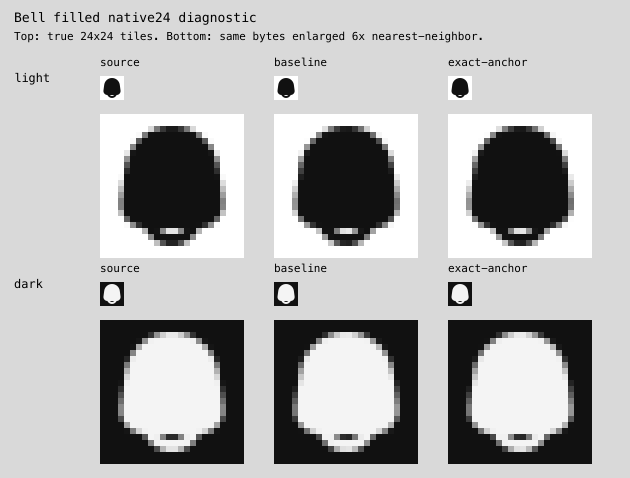

Actual native24 tiles and6× nearest-neighbor enlargements. Source, reconstruction and ineffective source-origin correction. Bell remains uncertain/refused.

Exact evidence receipt · Earlier actual outputs and retained failures